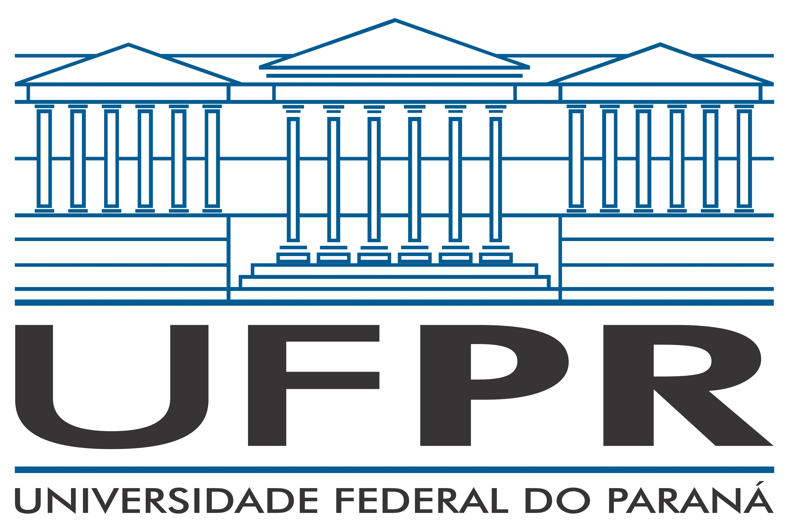
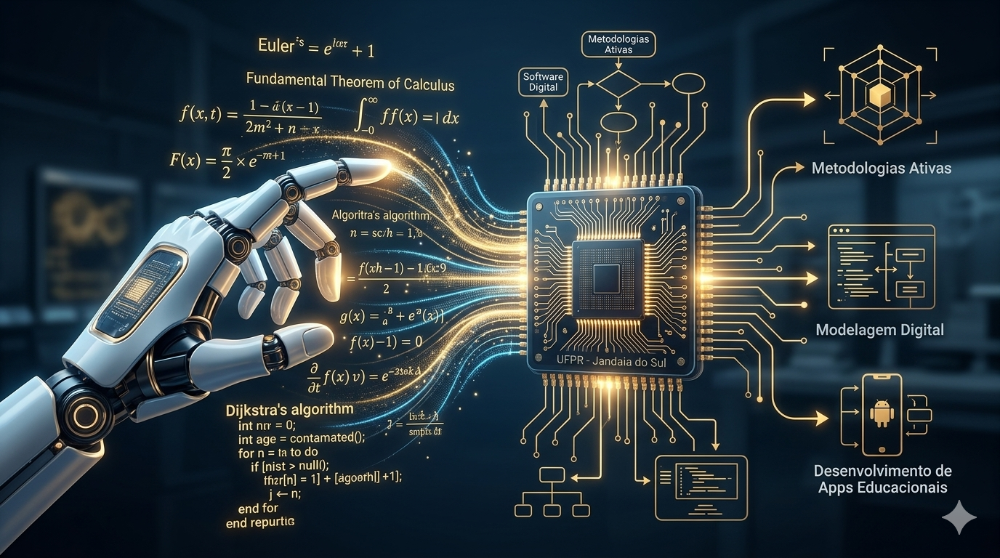

Campus Jandaia do Sul
Domine a matemática pura e as ferramentas digitais para formar os cidadãos e os profissionais do futuro. Um curso que une o rigor acadêmico à inovação tecnológica.
Fale com a Coordenação Como Ingressar
O curso de Licenciatura em Matemática e Tecnologias Digitais da UFPR, campus Jandaia do Sul, prepara professores capazes de integrar de forma inovadora o conhecimento matemático com as novas tecnologias digitais. Nossos egressos estarão aptos a atuar na educação básica, técnica e tecnológica, desenvolvendo novas metodologias de ensino.
Conheça o curso por dentro Conheça o curso por dentroUm currículo que garante o domínio dos fundamentos da matemática clássica e moderna.
Formação prática em programação, algoritmos, robótica educacional e modelagem digital.
Abordagens pedagógicas inovadoras que transformam o aprendizado em uma jornada participativa.
Início do Curso
Fundamentos de Matemática, Cálculo e Programação
Projetos Integradores: Educacional
Aplicação Digital: Criação de Apps Educacionais, Robótica
Licenciado em Matemática e Tec. Digitais
O ingresso no curso ocorre anualmente via Vestibular UFPR ou SISU (Nota do ENEM). Fique atento aos prazos!